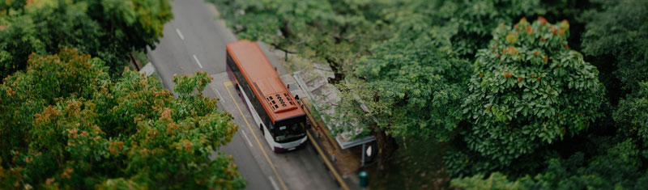

Наименование открытой статьи
Бетонная дорога — это многослойный пирог (как, впрочем, и любая другая дорога). Нижняя его часть состоит из бетона — щебня, скрепленного цементом. Такое жесткое основание предотвращает деформацию верхнего слоя. На бетон с щебнем укладывается геотекстильное полотно, которое разделяет слои дорожного покрытия и отводит воду. Потом на это основание специальными машинами укладывается равномерный слой из бетонной смеси, толщиной в 25–30 сантиметров.
Через два-три дня, когда цемент наберет прочность, монолитную плиту режут на квадраты по 25 м² каждый (перед этим в месте будущих швов материал армируется). Швы нужны из-за свойств цемента: при изменении температуры покрытие будет расширяться и сужаться, а значит, может лопнуть. Прорези делаются на глубину 5–7 сантиметров и герметизируются резиновыми уплотнителями.
В самом конце на поверхность дороги наносят текстуру по технологии алмазной насечки или тонкий шероховатый слой. Это увеличивает сцепление колес с дорогой. После дорогу обрабатывают защитным средством и рисуют на ней разметку.

Через два-три дня, когда цемент наберет прочность, монолитную плиту режут на квадраты по 25 м² каждый (перед этим в месте будущих швов материал армируется). Швы нужны из-за свойств цемента: при изменении температуры покрытие будет расширяться и сужаться, а значит, может лопнуть. Прорези делаются на глубину 5–7 сантиметров и герметизируются резиновыми уплотнителями.